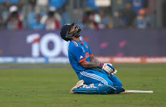

Virat Kohli's otherworldly performances in the year of 2023
For every Virat Kohli fan, 2023 is a bittersweet year. It started off with amazing performances
in bilateral ODI series in January, then he kept it up with decent performances in the ODI
series against Australia in March.
Virat Kohli scored a massive 166 against Sri Lanka in the 1st ODI in January of 2023 The real form kicked off with the 2023 IPL, where the King
resumed business as usual and scored a whopping 600+ runs, second in the leaderboard for the
Orange Cap. Then came the West Indies test series, where he scored a century and missed out on
a century in another innings. This was in late July. Then came the World Cup, where he was in God-like form. Never
before had ODI batting been taken to such a level, when he demonstrated his skills on the biggest
stage and saved his team from the narrow jaws of defeat time after time. Lastly, the South Africa
Test Series came, where he played like a lone warrior, saving India from embarrassment constantly.
Virat Kohli batting against South Africa in South Africa
The following is what I plan to present in this webpage:
Virat Kohli's batting in the 2023 IPL
Virat Kohli's batting in the 2023 World Cup
Virat Kohli's batting in test matches in 2023
These are the contents of this webpage, you can click on them to get to the respective
webpage subtopics:
The Indian Premier League - 2023 Edition
In the 2023 IPL season, Virat Kohli showcased exceptional batting prowess, amassing 639 runs in
14 matches at an average of 53.25 and a strike rate of 139.82. He scored two centuries and six
half-centuries, highlighting his consistency and adaptability across various match situations.
Kohli's performances were instrumental in Royal Challengers Bangalore's competitive campaign.
The following is a table with his match-wise performances against each team
Virat Kohli celebrating his century v/s SRH, scored at Hyderabad
Virat Kohli's runs - versus each opponent in 2023
Team Name
Score
Gujarat Titans
101
100
Delhi Capitals
55
50
Lucknow Supergiants
31
61
Kolkata Knight Riders
54
21
Rajasthan Royals
18
0
Punjab Kings
59
Mumbai Indians
1
82
Chennai Super Kings
6
Sunrisers Hyderabad
100
Total Runs Scored
693
Virat Kohli's Generational Performance in the 2023 World Cup
In the 2023 ICC Men's Cricket World Cup, Virat Kohli delivered a record-breaking performance,
amassing 765 runs in 11 innings at an average of 95.62. He scored three centuries—including a
historic 50th ODI ton—and six half-centuries, setting a new benchmark for the most runs in a
single World Cup edition. Kohli's consistency and batting prowess earned him the Player of the Tournament
award .

On 14th November 2023, Virat Kohli scored his 50th ODI century, overtaking Sachin Tendulkar's record
of most ODI centuries scored.
Here is a match by match breakdown of his performances in the World Cup:
Virat Kohli's 2023 World Cup Scores
Opponent
Runs Scored
Australia
85
54 (Final)
Afghanistan
55*
Pakistan
16
Bangladesh
103*
New Zealand
95
117 (Semi-final)
England
0
Sri Lanka
88
South Africa
101*
Netherlands
51
Total Runs Scored
765
* indicates Not-Out
Virat Kohli's Performances in Test matches in 2023
In 2023, Virat Kohli made a remarkable return to Test cricket, ending a three-year
century drought. He scored 671 runs in 12 innings at an average of 55.92, including
two centuries and two half-centuries. Notably, he achieved scores of 186 against
Australia and 121 against the West Indies. His consistent performances were
instrumental in India's series victories, highlighting his enduring prowess in the
longest format of the game.
Virat Kohli with a muted celebration acknowledging his family after scoring a century in the
Border Gavaskar Trophy of the year 2023.
To celebrate his brilliant performance in the year 2023, here is a match-by-match record
of his scores in all the test matches he played in 2023.
Opponent
1st Innings
2nd Innings
Australia (Nagpur)
12
-
Australia (Delhi)
44
20
Australia (Indore)
22
13
Australia (Ahmedabad)
186
-
West Indies (Dominica)
76
-
West Indies (Port of Spain)
121
-
South Africa (Centurion)
38
-
South Africa (Cape Town)
46
12
Total Runs Scored
590
Thank you for reading thus far! If you enjoyed reading this, here is a small question for
you:
Thank you for reading so far!
If you want to go to the top of the page:
Click here